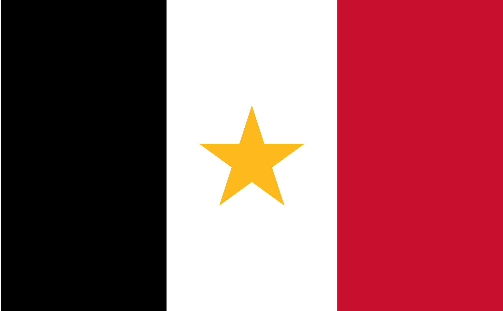

A continuación, el himno del estado de Coahuila compositado por José Luis Ulloa Pedroza:
I Hoy rendimos un tributo a Coahuila con orgullo nuestras voces se unirán y al cantar a la grandeza de esta tierra alma, voz y corazones vibrarán. Oh Coahuila mi tierra tan querida he venido hoy con júbilo a exaltar las virtudes infinitas de este suelo que es ejemplo de trabajo y dignidad. Coro Es Coahuila una tierra bendita de carácter tenaz y ejemplar que orgullosos sus hijos proclaman bello estado triunfante, inmortal. Es Coahuila una tierra bendita de carácter tenaz y ejemplar que orgullosos sus hijos proclaman bello estado triunfante, inmortal. II Al mirar su desierto y sus montañas escenario del esfuerzo creador surge el nombre de los hombres y mujeres que forjaron con valor esta nación Son tus hijos gran orgullo de esta patria que nos dieron con su vida libertad un ejemplo de este pueblo infatigable con estirpe de nobleza y de lealtad. Coro Es Coahuila una tierra bendita de carácter tenaz y ejemplar que orgullosos sus hijos proclaman bello estado triunfante, inmortal. Es Coahuila una tierra bendita de carácter tenaz y ejemplar que orgullosos sus hijos proclaman bello estado triunfante, inmortal. III Demostremos decididos que en Coahuila con pasión por esta senda al transitar cada paso engrandece nuestra historia como herencia de paz y de unidad. Coahuilenses hoy unamos nuestras voces entonemos nuestro canto con fervor y vivamos siempre en aras de armonía trabajando por un México mejor. Coro Es Coahuila una tierra bendita de carácter tenaz y ejemplar que orgullosos sus hijos proclaman bello estado triunfante, inmortal. Es Coahuila una tierra bendita de carácter tenaz y ejemplar que orgullosos sus hijos proclaman bello estado triunfante, inmortal.
Coahuila es un estado libre y soberano, esta dividido por sus 38 municipios y su capital es Saltillo. ademas de Saltillo, otras localidades importantes son Torreon, C.D Acuña, Monclova y Piedras Negras.
El año 1521 marcó el inicio de la conquista de Méjico con la llegada de inmigrantes españoles, que se dispersaron por toda Nueva España. Comisionado por el gobernador de la Nueva Vizcaya y al frente de una partida de soldados, Alberto del Canto fundó la villa de Santiago del Saltillo en 1577. Una década después, ya solo quedaban 20 españoles en Saltillo debido a los constantes ataques de los chichimecas.
A lo que hoy es Monclova, había penetrado en 1583 la trágica expedición de don Luis de Carvajal y de la Cueva, quien a orillas del río levantó un asentamiento con el nombre de Nueva Almadén. Hasta ese momento el avance colonizador había sido progresivo y sistemático. Sin embargo, la oleada colonizadora se detuvo durante casi un siglo y ni siquiera esta primera fundación, la de Almadén, logró permanecer. Poco después de la llegada de Carvajal a la hoy Monclova, la población quedó abandonada por el constante acoso de los indígenas.